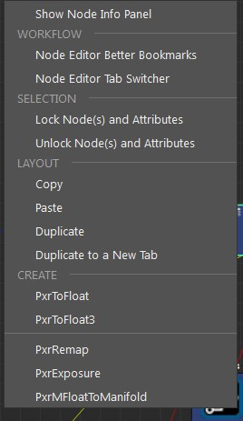
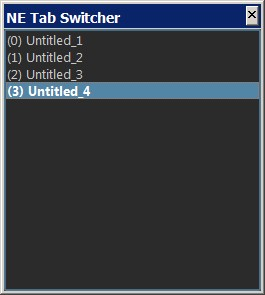
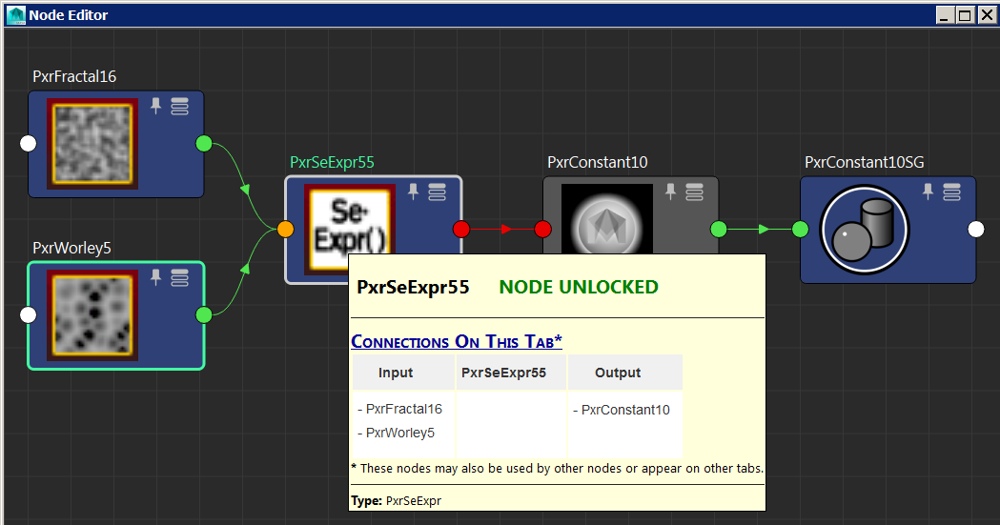
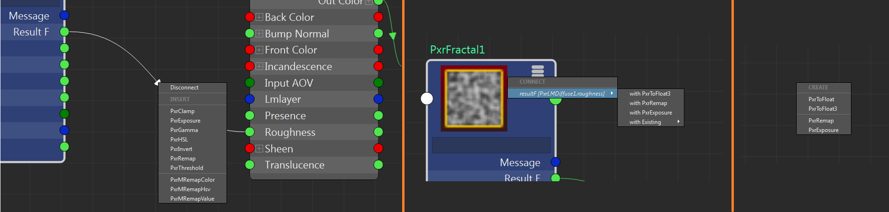

Node Editor Extended Menus for RenderMan |
|
VERSION 1.8 |
•Added "Create Master Control Node(s)" options (see sbNEsharedAttrs.mel) sbNEsharedAttrs.mel: Create a node to pass on value to selected attributes (via the Channel Box) for selected nodes. NOTE: The newly created node will keep the value of the first selected node. Currently works with float attributes only. •Added "Delete Selected Node(s)" option |
VERSION 1.7 |
•Added "Nodes Network Layout Manipulations" options to the context menu and the Node Editor UI. •Updated context menu subject headers visuals  |
VERSION 1.6 |
•Added "Node Editor Better Bookmarks" tool option |
VERSION 1.5 |
•Added "Node Editor Tab Switcher" option  |
VERSION 1.4.1 |
•Fixed header text alignment to left |
VERSION 1.4 |
•Added "Show/Hide Node Info Panel". Read about it here. |
VERSION 1.3 |
•Added Lock/Unlock Option for Nodes; can be applied individually when hovering on a node (CTRL+LMB on the node) OR to a selection of nodes (CTRL+LMB on the Node Editor Canvas). •Added tooltip info for node.  •Newly created node(s) is now created where the mouse pointer is. |
VERSION 1.2 |
•Add more Connection options. •Changed the command key to Ctrl+LMB instead of Shift+LMB. •Add another duplicate option. •Fixed PxrMFloatToManifold issue. |
VERSION 1.1 |
•Add PxrMFloatToManifold connection option. •Add duplicate options when ctrl-clicking on a node. •Created a bit more robust and responsive populating the "with Existing" sub-menu (when there are many nodes on the Node Editor Canvas). •Fixed some menu nesting issues |
VERSION 1.0 |
•Initial Release. In an effort to make the workflow within Maya more intuitive (and a bit more similar to Slim), I have created a script that assist with the workflow of connecting nodes in Maya's Node Editor. This script will add additional options for Maya Node Editor. Once you ctrl + left mouse button click on a node, connection or the Node Editor canvas, you will get an appropriate menu: 1.INSERT mode: Ctrl-Clicking on a connection will allow you to insert an intermediate node between two other nodes. 2.CONNECT mode: Ctrl-Clicking on a node will give you the option to create and connect the chosen output to a new node from the list (chosen few) or to existing nodes that currently exist in to the Node Editor canvas. 3.CREATE mode: Ctrl-Clicking on the canvas will give you a list of common to create.  In all cases of node connections, the script determines the type of attribute connections and adds the appropriate conversion node if necessary ("PxrToFloat" or "PxrToFLoat3"). To use it, load the script AFTER you load the Maya Node Editor (or set it to run as a shortcut*). * To set it to run automatically with a shortcut follow the steps below: 1.Load the Hotkey Editor: Windows->Settings/Preferences->HotkeyEditor 2.In the right part of the screen, select the "Runtime Command Editor" tab. 3.Click new and in the "Name"" field enter "nodeEditorWithRManExtendedMenus". 4.In the script area below, enter the following (change the path accordingly): NodeEditorWindow; source "sandbird/sbPxrExtendedMenus.mel"; 5.Click on the "Save Runtime Command" at the bottom. 6.On the left part of the Hotkey Editor, under "Edit Hotkeys For:", select "Custom Scripts" and locate the one we just created. 7.Double click on the Hotkey cell and enter whatever hotkey you want (I use Ctrl+Shift+N). 8.Click on the Save button at the bottom. 9.Close the Hotkey Editor window and try the hotkey combination to see if the Node Editor loads and if so, check if the "Extended Menus" work by the aforementioned instructions. |